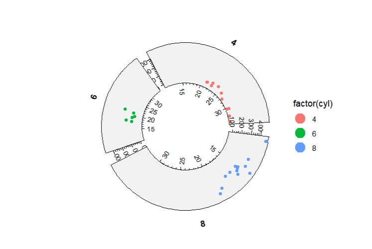
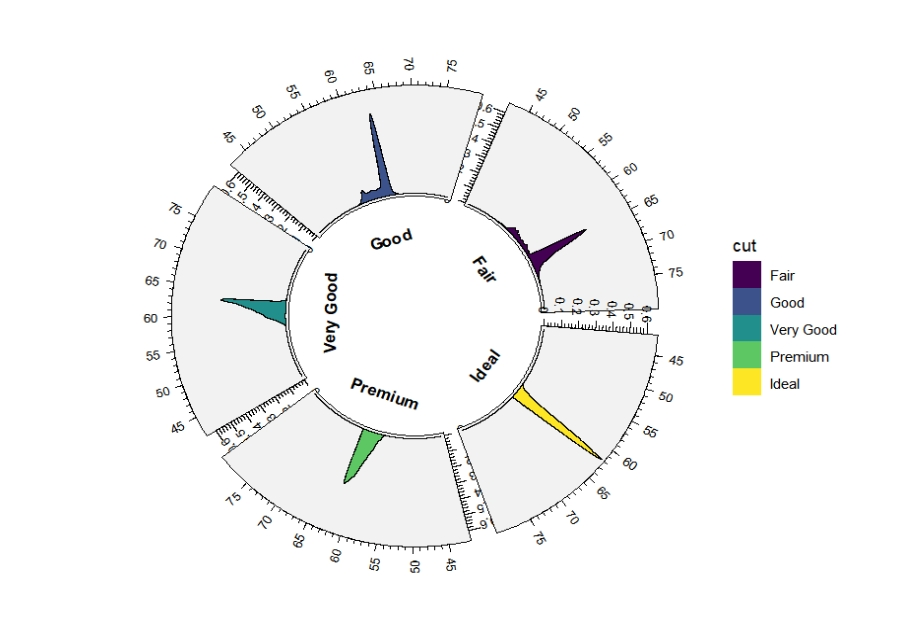

Chapter 4 Geom track layers
To visualize data with various categories, ggplot2 can use facet_wrap and facet_grid to put different group data into different sub-panels. We can use different sectors to group by the data.
geom_track* layers works like facet_wrap. It puts different category data in each sector. We should give a mapping variable sector to define which column will be used.
4.1 geom_trackpoint
ggcirclize(data = mtcars,
mapping = aes(x = mpg,y = disp,sector = cyl,end = 360,
color = factor(cyl))) +
geom_trackpoint()ggcirclize(data = mtcars,
mapping = aes(x = mpg,y = disp,sector = cyl,end = 360,
color = factor(cyl))) +
geom_trackpoint(xAxis.params = list(pos = "bottom"))
sector.gap change the gap between sectors:
ggcirclize(data = mtcars,
mapping = aes(x = mpg,y = disp,sector = cyl,end = 360,
color = factor(cyl))) +
geom_trackpoint(sector.gap = 20,strip.label.pos = "bottom")
You can set scales with fixed/free/free_x/free_y to adjust x and y scale range for each sector:
ggcirclize(data = mtcars,
mapping = aes(x = mpg,y = disp,sector = cyl,
color = factor(cyl),
start = 0,end = 360)) +
geom_trackpoint(sector.gap = 20,scales = "free_y")ggcirclize(data = mtcars,
mapping = aes(x = mpg,y = disp,sector = cyl,
color = factor(cyl),
start = 0,end = 360)) +
geom_trackpoint(sector.gap = 20,scales = "free")set.seed(111)
mat <- matrix(sample(seq(0,20,length = 400),400,replace = T),ncol = 20)
rownames(mat) <- paste0("gene",1:20)
colnames(mat) <- paste0("samp",1:20)
mat_long <- reshape2::melt(mat)
mat_long$gp <- rep(LETTERS[1:4],50)
ggcirclize(data = mat_long,
mapping = aes(x = Var1,y = Var2,size = value,color = value,
sector = gp,end = 360)) +
geom_trackpoint(strip.label.pos = "bottom",sector.gap = 20,scales = "fixed")4.2 geom_tracktile
mat <- scale(USArrests)
mat.long <- reshape2::melt(mat)
# mat.long$gp <- rep(LETTERS[1:4],each = 50)
mat.long$gp <- sample(LETTERS[1:4],200,replace = T)
# mat.long$Var1 <- sample(colnames(mat),200,replace = T)
ggplot(mat.long,aes(x = Var1,y = Var2,fill = value)) +
geom_tile() +
scale_fill_gradient2(low = "green",mid = "black",high = "red",midpoint = 0) +
theme(axis.text.x = element_text(angle = 90,hjust = 1,vjust = 0.5)) +
facet_wrap(~gp,scales = "fixed")4.3 geom_trackbar
4.5 geom_trackdensity
ggcirclize(diamonds,aes(x = depth,fill = cut,sector = cut)) +
geom_trackdensity(aes(end = 360),strip.label.pos = "bottom")
ggcirclize(diamonds,aes(x = depth,fill = cut,sector = cut)) +
geom_trackdensity(aes(end = 360),strip.label.pos = "bottom",
scales = "free_y")## geom_trackarea